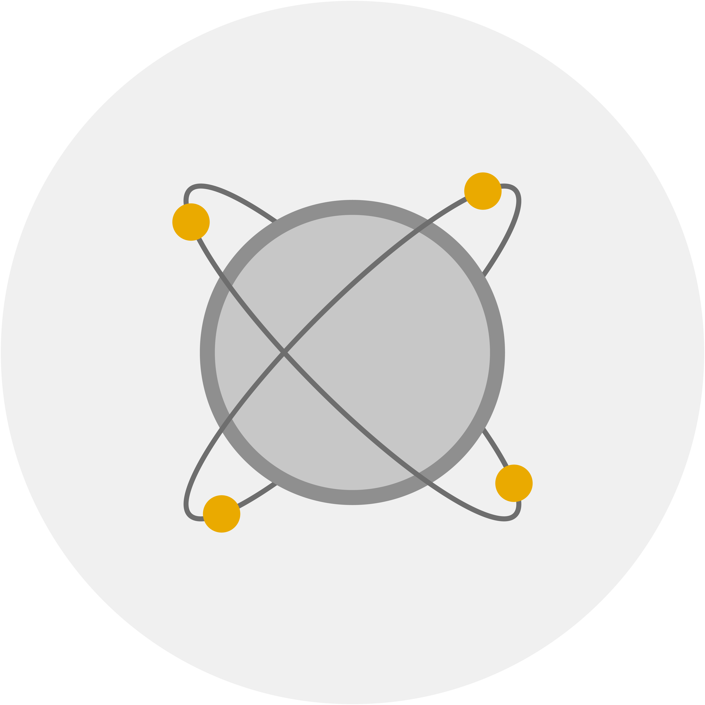

Within slide
✚ Spot comment
Comments
0
Clean presentation ↗
Get to know the lab
Research areas

Space Coordination
Space Sustainability
Space Security
espl.ae.gatech.edu
Explore the project
How Close Is Too Close?
Open the live project page ↗
×
Illustrative orbit raise to GEO
Object A
Object B
About this project
⇄
Drag to orbit · Scroll to zoom
⠿
‹ Previous
Next ›